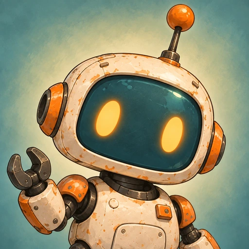
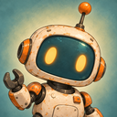
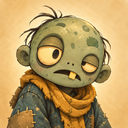
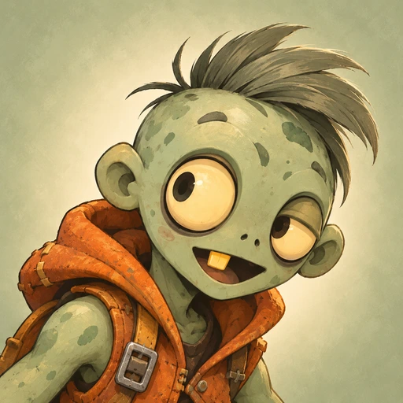
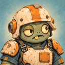
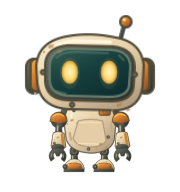
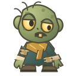
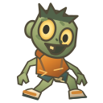
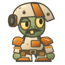

Warm enamel. Expressive faces. A shared world.
Portraits + editable game artworkPNG & WebP · 64 / 128 / 256 / 512

The repair partner

Slow and sleepy


Quick and curious
Heavy and stubborn

Separate robot parts, six expressions and three cosmetic attachments. Distinct enemy silhouettes, with the same cream, teal and orange material palette.



